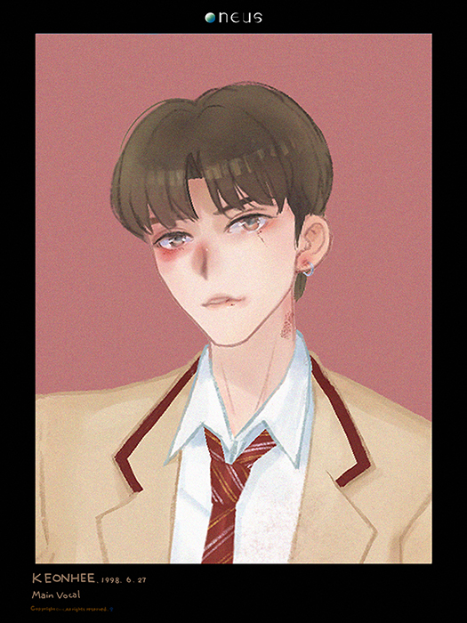

Keonhee

이건희 (李建熙) / Keon Hee
生日：1998年6月27日
国籍：大韩民国
学历：
RBW中学（毕业）
Earth school高中（就读中）
兴趣爱好：欣赏艺术作品，吃美食
特长：钢琴，英语，日语，个人技，抢别人的个人技
家庭状况：父母，妹妹两位
别名：거늬/거니建熙/koni, 건햐建熙呀 올라프雪宝, 토끼兔子, 개구리蛙蛙, 재벌큐티财阀小可爱
TMI
1. 音乐社第二大主唱，因一次在校园唱歌活动时看见了鸽子，
嘴张得比话筒还大而出名。在接受校园报道采访时表示本人非常害怕鸽子，
即使是看到都会起一身鸡皮疙瘩的程度。
2. 和舞蹈社新星吕焕雄是从小一起长大的青梅竹马，由于熟知学校周边各类美食，
在班级里担任生活委员的角色。
3. 每次在好友吕焕雄被欺负时被吕焕雄支开，但很快发现不对，
由于自身实力不足，且吕焕雄显然不愿被李建熙发现霸凌事件，
于是每次偷偷录下视频，在之后的团体解散中，视屏起到了很重要的威慑作用。
4. 十分感性，经常在感人情节的电影或是电视剧的观看途中就哭得哩哗啦。
最近正在矫正牙齿戴牙套中，哭的时候漏风的声音十分明显，
吕焕雄由于嘲笑李建熙漏风声音每次都被锤。